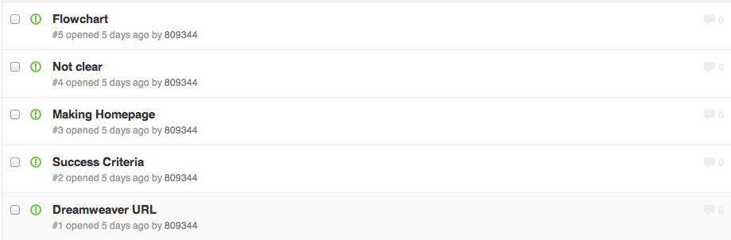

Evaluation
Everyone agrees one the idea so far
Feedback on story board from Steven:
- The background- a little bit distracting
- Straight to the point- extremely simple :)
- Change the font= not appealing to the eye

PROBLEMS:
- 
What I learnt so far:
- I learnt how to put numbers instead of bullet points through the web by searching it online: The website